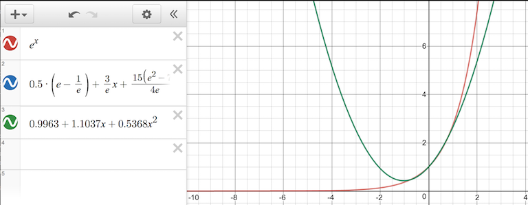

Calculating \((A^TA)^{-1}A^T\) is kind of overkill. In general there are better alternatives than calculating the inverse of a matrix to solve a system of equations. Gaussian elimation is simple alternative. Although it operates in \(O(n^3)\) steps it necessarily requires fewer operations than calculating the inverse and is numerically more stable.
Provided the columns of \(A\) are independent, then \(A^TA\) will have an inverse. However, even if the columns of \(A\) are independent, it’s possible for \(A\) to be ill-conditioned, in which case orthogonal decomposition techniques are a slower but more stable route. Dmitriy Leykekhman describes using \(QR\) decomposition to solve linear least squares. In the general case, \(A\) is an \(m\times{}n\) matrix with rank \(n\). Given \(A = QR\), in order to solve \(A\textbf{x} = \textbf{b}\), we determine \(\textbf{x} = P\textbf{y}\) such that:
\(R\textbf{y} = \textbf{c}\)
\(Q^T\textbf{b} = \begin{pmatrix}\textbf{c} \\ \textbf{d} \end{pmatrix}\)
and \(P\) is the permutation matrix such that
\(Q^T A P = \begin{pmatrix}R \\ 0 \end{pmatrix}\)
The polynomial fit problems I’ve described so far are discrete: they match at a particular set of points. There is more sophisticated use of least squares which operates continuously on a function over some domain. This technique generates the Least Squares Polynomial.
Biswa Nath Datta offers a detailed derivation for the Least Squares Polynomial problem. The goal in to minimize the residual continuously over the entire interval, in essence finding the closest overall polynomial approximation. The objective function minimized in this case is \(E = \int_a^b[f(x)-P_n]^2dx\). By calculating the derivative of \(E\) and setting to 0, the normal equations work out to be (using the powers of x as our basis):
\(a_0\int_a^b1dx + a_1\int_a^bxdx + \cdots + a_n\int_a^bx^ndx = \int_a^bf(x)dx\)
\(\cdots\)
\(a_0\int_a^bx^idx + a_1\int_a^bx^{i+1}dx + \cdots + a_n\int_a^bx^{i+n}dx = \int_a^bx^if(x)dx\)
for \(i=1,2,3,\cdots,n\)
Substituting \(s_i\) for the integrals on the left and \(b_i\) for those on the right gives us
\(\begin{pmatrix}s_0 & s_1 & \cdots & s_n \\ s_1 & s_2 & \cdots & s_{n+1} \\ \vdots & \vdots & \ddots & \vdots \\ s_n & s_{n+1} & \cdots & s_{2n}\end{pmatrix} \begin{pmatrix}a_0 \\ a_1 \\ \vdots \\ a_n\end{pmatrix} = \begin{pmatrix}b_0 \\ b_1 \\ \vdots \\ b_n\end{pmatrix}\)
…or \(S\textbf{a} = \textbf{b}\).
It is generally recommended to, instead of using the powers of x to generate \(S\), to instead use an orthogonal polynomial basis. This is because \(S\) above is often ill-conditioned when using the powers of x, leading to instability and the accumulation of numeric errors. As an alternative, an orthogonal polynomial basis, such as the Legendre polynomials, can produce a stable \(S\) and are reasonably convienient to work with not least because they can be derived iteratively.

For example, consider the case of fitting a quadratic polynomial to \(e^x\). Biswa Nath Datta computes a solution of using an orthogonal basis, \(p(x) = \frac{1}{2}(e-\frac{1}{e}) + \frac{3}{e}x + (\frac{15 (e^2-7)}{4 e})(x^2-\frac{1}{3})\) and the powers-of-x basis, \(p(x) = 0.9963 + 1.1037x + 0.5368x^2\) respectively. Measuring the error with \(\int_{-1}^{1}(e^x-p(x))^2\) gives the relative values of approximately \(0.001441\) and \(0.00193\) respectively. In general we expect the polynomials to be very close. In some circumstances minimizing the overall error is less important than minimizing the error at a particular set of points, in which case the discrete method may be preferable.
While Least Squares is designed to be robust against errors in y, it is not particularly good about errors in x (in statistics terms we say that the regressors - the elements of \(\textbf{x}\) - must be exogenous). The errors it fares best against are random and normally distributed - any consistent bias in measurement cannot be corrected.
When generating a least squares polynomial with an orthogonal polynomial basis, care must be taken though to use the interval over which the basis is orthogonal. Legendre polynomials, for example, are orthogonal over the domain \(-1 \leq x \leq 1\). Using least squares in this case requires either restricting the domain or using a change of variables to effect the same.
When doing function approximation (or modeling), we usually need to measure how good our approximation is. This is especially useful when we’re generating a polynomial approximation but aren’t sure what the right degree is: incrementally increasing the degree and stopping when the error inflects can be our best option. There are several standard methods of measuring error, and the Root Mean Square - RMS - is typical.
\(E_2 = \sqrt{{\sum_{i=1}}^{n} (y_i - f(x_i))^2}\)
In the case where we’re trying to build a simple model of an affine function \(y = mx + b\), the coerrelation coefficient tells us how closely the data ends up fitting the straight line. The correlation coefficient is labeled \(r\).
\[r = \sqrt{\frac{\sum_{i} [(b+mx_i)-\tilde{y}]^2}{\sum_{i}(y_i - \tilde{y})^2}}\]
…where \(\tilde{y}\) is the mean value of the dependent variable y, \(r\) ranges from +1 to –1, and the extreme values of \(r\) indicate a perfectly linear relationship (the sign indicating the slope).